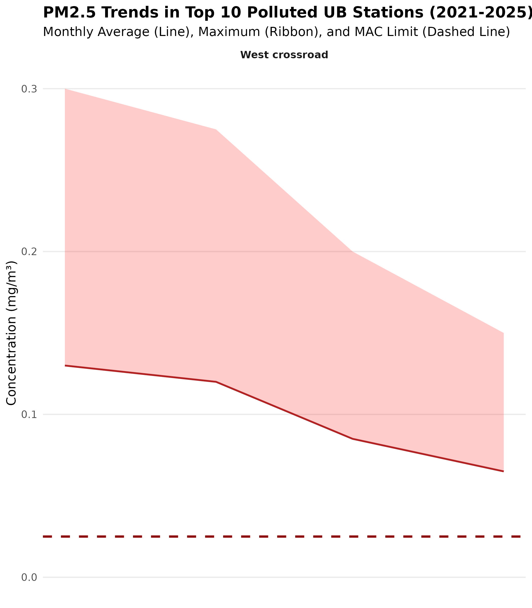
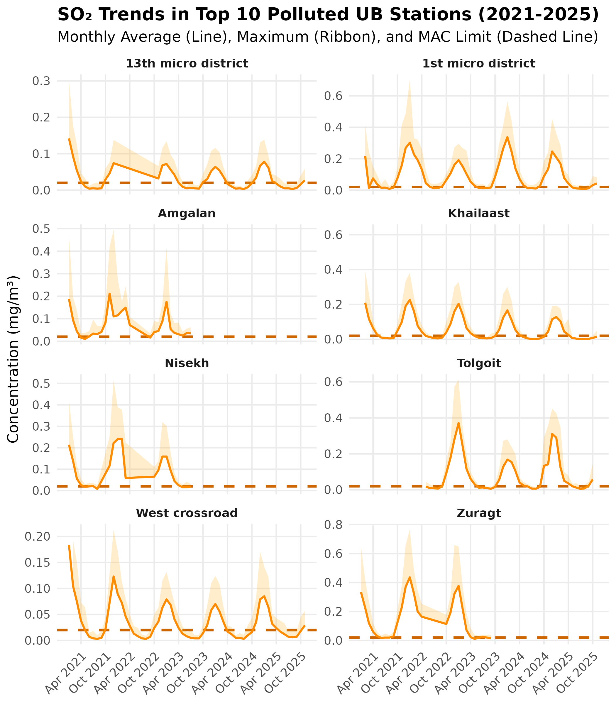
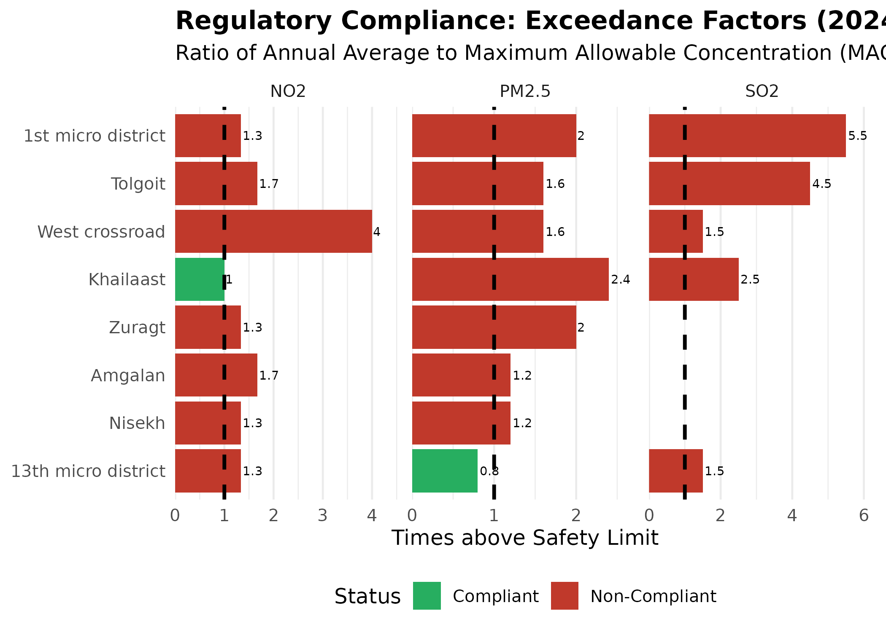
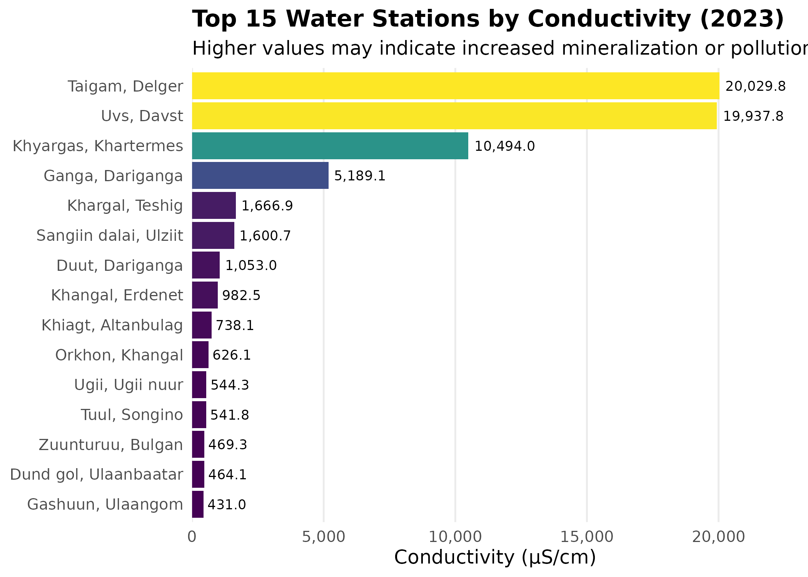
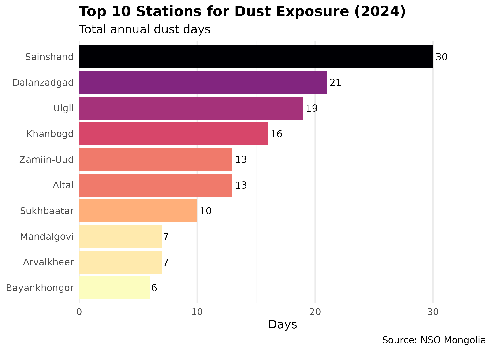

Environmental Data Analysis
Source:vignettes/environmental-surveillance.Rmd
environmental-surveillance.Rmd
library(mongolstats)
library(dplyr)
library(ggplot2)
library(tidyr)
library(stringr)
nso_options(mongolstats.lang = "en")
# Global theme with proper margins to prevent text cutoff
theme_set(
theme_minimal(base_size = 11) +
theme(
plot.margin = margin(10, 10, 10, 10),
plot.title = element_text(size = 13, face = "bold"),
plot.subtitle = element_text(size = 10, color = "grey40"),
legend.text = element_text(size = 9),
legend.title = element_text(size = 10)
)
)Overview
Air quality is a primary environmental determinant of health in Mongolia. The NSO’s network of monitoring stations provides high-resolution data essential for exposure assessment. Unlike aggregated regional data, these station-level measurements allow for localized exposure assessment—critical for environmental health research.
This guide demonstrates how to: - Analyze air quality trends across monitoring stations - Compare pollutant levels against regulatory standards - Map water quality across river basins - Track climate-related health risks (dust exposure)
Air Quality Monitoring
Pollutant Concentrations by Station
The NSO maintains air quality monitoring stations that measure key pollutants. We’ll focus on the Top 10 most polluted stations in Ulaanbaatar to understand the severity of exposure.
# 1. Identify Top 10 Polluted Stations in UB (using 2024 annual data)
air_annual <- nso_data(
"DT_NSO_2024_135V01",
selections = list(Year = "2024"),
labels = "en"
) |>
filter(!is.na(value)) |>
mutate(
Station = str_trim(`Station location_en`),
Pollutant = str_trim(Indicator_en)
)
# Define UB Stations
ub_stations <- c(
"Misheel-Expo center", "West crossroad", "1st micro district",
"13th micro district", "32nd Toirog", "Ofitseruudiin ordon",
"Kharkhorin market", "Urgakh naran micro district", "Dambdarjaa",
"Khailaast", "Tolgoit", "Zuragt", "Amgalan", "Nisekh",
"Tavan buudal", "Bayankhoshuu", "Sharkhad", "100 ail"
)
# Rank UB stations by PM2.5 levels
top_10_stations <- air_annual |>
filter(Station %in% ub_stations) |>
filter(str_detect(Pollutant, "PM2.5")) |>
arrange(desc(value)) |>
head(10) |>
pull(Station)
# 2. Fetch Monthly Data for Detailed Trends (2023-2025)
air_monthly <- nso_data(
"DT_NSO_2400_015V2",
selections = list(
Year = as.character(2023:2025)
),
labels = "en"
) |>
filter(!is.na(value)) |>
mutate(
Station = str_trim(Location_en),
Pollutant_Raw = str_trim(`Indicator of air pollution_en`),
Date = as.Date(paste0(Month_en, "-01"))
) |>
# Explicit date filter to ensure only 2023-2025 data (Year selection may not work)
filter(Date >= as.Date("2021-01-01"), Date <= as.Date("2025-12-31")) |>
filter(Station %in% top_10_stations)
# Clean and Reshape Data for Ribbons
# We need Average, Min, and Max for PM2.5 and SO2
air_trends <- air_monthly |>
mutate(
Pollutant_Type = case_when(
str_detect(Pollutant_Raw, "PM2.5") ~ "PM2.5",
str_detect(Pollutant_Raw, "Sulphur dioxide") ~ "SO2",
TRUE ~ NA_character_
),
Measure = case_when(
str_detect(Pollutant_Raw, "Average") ~ "Average",
str_detect(Pollutant_Raw, "Maximum") ~ "Maximum",
str_detect(Pollutant_Raw, "Minimum") ~ "Minimum",
TRUE ~ "Other"
)
) |>
filter(!is.na(Pollutant_Type), Measure %in% c("Average", "Maximum")) |>
# Use Average for the trend line and Maximum for the upper ribbon bound
# Outlier Removal: Group by Station and Pollutant to detect anomalies
# Using IQR method (3 * IQR) to remove extreme outliers while keeping natural spikes
group_by(Station, Pollutant_Type, Measure) |>
mutate(
Q1 = quantile(value, 0.25, na.rm = TRUE),
Q3 = quantile(value, 0.75, na.rm = TRUE),
IQR = Q3 - Q1,
Lower = Q1 - 3 * IQR,
Upper = Q3 + 3 * IQR,
Is_Outlier = value < Lower | value > Upper
) |>
filter(!Is_Outlier) |>
ungroup() |>
select(Station, Date, Pollutant_Type, Measure, value) |>
pivot_wider(names_from = Measure, values_from = value)
# Note: If "Minimum" isn't explicitly available, we'll just show Average and Max rangePM2.5 Trends: High-Risk Stations
Fine Particulate Matter (PM2.5) poses the greatest health risk among air pollutants due to its ability to penetrate deep into the lungs and bloodstream. The following trends reveal chronic winter pollution crisis across Ulaanbaatar’s most exposed neighborhoods.
What the dashed line means: The horizontal dashed red line represents Mongolia’s Maximum Allowable Concentration (MAC) for PM2.5 annual average (0.025 mg/m³). Values above this line indicate non-compliance with national air quality standards and heightened health risks.
# MAC annual average for PM2.5
mac_pm25 <- 0.025
p_pm <- air_trends |>
filter(Pollutant_Type == "PM2.5") |>
ggplot(aes(x = Date, group = Station)) +
# MAC reference line - regulatory threshold for health protection
geom_hline(yintercept = mac_pm25, linetype = "dashed", color = "darkred", linewidth = 1) +
# Ribbon shows range from average to maximum - captures daily variability
geom_ribbon(aes(ymin = Average, ymax = Maximum), fill = "red", alpha = 0.2) +
geom_line(aes(y = Average), color = "firebrick", linewidth = 0.8) +
facet_wrap(~Station, ncol = 2, scales = "free_y") + # each station on its own scale
scale_x_date(date_breaks = "6 months", date_labels = "%b %Y") +
labs(
title = "PM2.5 Trends in Top 10 Polluted UB Stations (2021-2025)",
subtitle = "Monthly Average (Line), Maximum (Ribbon), and MAC Limit (Dashed Line)",
x = NULL,
y = "Concentration (mg/m³)"
) +
scale_y_continuous(limits = c(0, NA)) + # y-axis starts at 0 for honest comparison
theme_minimal(base_size = 12) +
theme(
plot.title = element_text(face = "bold"),
strip.text = element_text(face = "bold"),
panel.grid.minor = element_blank(),
axis.text.x = element_text(angle = 45, hjust = 1)
)
p_pm # print static ggplot
Key Findings: All 10 stations show systematic winter exceedances, with peak concentrations reaching 4-10x the MAC limit during heating season (November-February). Even during summer months, many stations hover near or above the regulatory threshold, indicating year-round exposure with dangerous seasonal spikes.
Sulfur Dioxide (SO₂) Trends: The Coal Combustion Signature
Sulfur dioxide is a direct tracer of raw coal combustion for residential heating. Unlike PM2.5 (which has multiple sources), SO₂ patterns directly reflect fuel use intensity, making it a critical indicator for evaluating clean energy transition policies.
What the dashed line means: The horizontal dashed orange line represents Mongolia’s MAC for SO₂ annual average (0.020 mg/m³). Exceedances indicate both regulatory non-compliance and respiratory health risks, particularly for vulnerable populations (children, elderly, asthmatics).
# MAC annual average for SO2
mac_so2 <- 0.020
p_so2 <- air_trends |>
filter(Pollutant_Type == "SO2") |>
ggplot(aes(x = Date, group = Station)) +
# MAC reference line - SO2 threshold for respiratory health
geom_hline(yintercept = mac_so2, linetype = "dashed", color = "darkorange3", linewidth = 1) +
geom_ribbon(aes(ymin = Average, ymax = Maximum), fill = "orange", alpha = 0.2) +
geom_line(aes(y = Average), color = "darkorange", linewidth = 0.8) +
facet_wrap(~Station, ncol = 2, scales = "free_y") +
scale_x_date(date_breaks = "6 months", date_labels = "%b %Y") +
labs(
title = "SO₂ Trends in Top 10 Polluted UB Stations (2021-2025)",
subtitle = "Monthly Average (Line), Maximum (Ribbon), and MAC Limit (Dashed Line)",
x = NULL,
y = "Concentration (mg/m³)"
) +
theme_minimal(base_size = 12) +
theme(
plot.title = element_text(face = "bold"),
strip.text = element_text(face = "bold"),
panel.grid.minor = element_blank(),
axis.text.x = element_text(angle = 45, hjust = 1)
)
p_so2 # print static ggplot
Critical Pattern: SO₂ shows extreme seasonal variation (20-30x increase in winter vs. summer), far exceeding PM2.5’s seasonal swing. This confirms that residential coal heating is the dominant driver of winter air pollution. Peak concentrations during January-February can reach 10-30x the MAC limit, representing acute health hazard conditions.
Regulatory Compliance: Exceedance Factor
The Exceedance Factor quantifies how many times a station’s annual average exceeds the regulatory limit. A factor of 1.0 represents the threshold; values >1.0 indicate non-compliance.
To clearly see how much stations exceed safety limits, we calculate the Exceedance Factor (Ratio of Annual Average to MAC). A value > 1.0 indicates non-compliance.
# 1. Get MAC Standards
mac_so2 <- 0.020 # Annual average mg/m3
mac_no2 <- 0.030 # Annual average mg/m3
mac_pm25 <- 0.025 # Annual average mg/m3 (WHO/National target approximation)
# 2. Calculate Exceedance for 2024
compliance <- air_annual |>
filter(Station %in% top_10_stations) |>
mutate(
Pollutant_Type = case_when(
str_detect(Pollutant, "PM2.5") ~ "PM2.5",
str_detect(Pollutant, "Sulphur dioxide") ~ "SO2",
str_detect(Pollutant, "Nitrogen dioxide") ~ "NO2",
TRUE ~ NA_character_
),
MAC = case_when(
Pollutant_Type == "PM2.5" ~ mac_pm25,
Pollutant_Type == "SO2" ~ mac_so2,
Pollutant_Type == "NO2" ~ mac_no2,
TRUE ~ NA_real_
)
) |>
filter(!is.na(Pollutant_Type)) |>
mutate(
Exceedance_Factor = value / MAC,
Status = ifelse(Exceedance_Factor > 1, "Non-Compliant", "Compliant")
)
# 3. Plot regulatory compliance - exceedance factor shows how many times over the limit
p_comp <- compliance |>
ggplot(aes(x = reorder(Station, Exceedance_Factor), y = Exceedance_Factor, fill = Status)) +
geom_col() +
geom_hline(yintercept = 1, linetype = "dashed", color = "black", linewidth = 1) + # compliance threshold
geom_text(aes(label = round(Exceedance_Factor, 1)), hjust = -0.1, size = 2.5) + # inline labels
facet_wrap(~Pollutant_Type, scales = "free_x") +
coord_flip() +
scale_fill_manual(values = c("Compliant" = "#27ae60", "Non-Compliant" = "#c0392b")) +
scale_y_continuous(expand = expansion(mult = c(0, 0.15))) +
labs(
title = "Regulatory Compliance: Exceedance Factors (2024)",
subtitle = "Ratio of Annual Average to Maximum Allowable Concentration (MAC)",
y = "Times above Safety Limit",
x = NULL
) +
theme_minimal(base_size = 12) +
theme(
plot.title = element_text(face = "bold"),
legend.position = "bottom",
panel.grid.major.y = element_blank()
)
p_comp # print static ggplot
Compliance Crisis: 90% of top stations are non-compliant for PM2.5, with exceedance factors reaching 2.0-2.5x (equivalent to annual averages of 0.050-0.063 mg/m³). Only the 13th micro district achieves compliance for PM2.5, suggesting localized factors (wind patterns, lower housing density, or cleaner fuel access) warrant investigation for replication elsewhere.
SO₂ non-compliance is universal across all 10 stations, with factors of 2-4x, underscoring the pervasive reliance on raw coal for heating.
Water Quality Monitoring
Electrical conductivity serves as a proxy for total dissolved solids and water mineralization. Values >1,000 µS/cm typically indicate significant mineral content; values >10,000 µS/cm suggest either natural saline conditions (endorheic basins) or severe anthropogenic pollution.
Water quality is monitored at specific river and lake stations across Mongolia’s major basins. We focus on the Top 15 stations with the highest electrical conductivity.
# Fetch water quality data
water <- nso_data(
"DT_NSO_2300_005V12",
selections = list(),
labels = "en"
) |>
filter(!is.na(value)) |>
mutate(
Station = str_trim(`Station location_en`),
Indicator = str_trim(Indicator_en)
)
# Focus on electrical conductivity & Top 15
conductivity <- water |>
filter(str_detect(Indicator, "Electrical conductivity")) |>
slice_max(order_by = value, n = 15)
# Plot water quality - top stations by conductivity
p <- conductivity |>
mutate(Station = reorder(Station, value)) |>
ggplot(aes(x = Station, y = value, fill = value)) +
geom_col(show.legend = FALSE) +
geom_text(aes(label = scales::comma(value)), hjust = -0.1, size = 3) + # inline labels
coord_flip() +
scale_y_continuous(labels = scales::comma, expand = expansion(mult = c(0, 0.15))) +
scale_fill_viridis_c(option = "viridis") +
labs(
title = "Top 15 Water Stations by Conductivity (2023)",
subtitle = "Higher values may indicate increased mineralization or pollution",
x = NULL,
y = "Conductivity (μS/cm)"
) +
theme_minimal(base_size = 12) +
theme(
plot.title = element_text(face = "bold"),
panel.grid.major.y = element_blank(),
panel.grid.minor = element_blank()
)
p # print static ggplot
Interpreting Conductivity: A Tale of Three Sources
The top 15 stations reveal three distinct environmental stories driven by geology, industry, and climate:
- Natural Saline Basins (The Extremes > 10,000 µS/cm): The highest values belong to naturally hypersaline, endorheic lakes.
- Uvs/Davst & Gashuun: Uvs Lake, a UNESCO site and Mongolia’s largest saline lake.
- Khyargas: A major salt lake in the Great Lakes Depression.
- Sangiin dalai: A saline lake in Ulziit sum, Uvurkhangai province, distinct from the larger northern lake of the same name.
- Taigam/Delger: Likely a saline wetland or spring in the Govi-Altai mineral belt.
- Industrial & Urban Pollution (The “Hidden” Highs): Elevated conductivity in freshwater rivers often signals contamination.
- Khangal (Erdenet): The Khangal River is heavily impacted by mining activities and wastewater from Erdenet city, showing mineralization 2x higher than historical baselines.
- Tuul (Songino) & Dund gol: These stations capture the urban wastewater footprint of Ulaanbaatar, where treated and untreated effluent raises ion concentrations downstream.
- Climate-Sensitive Lakes (The “Shrinking” Signals):
- Ganga, Duut, & Ugii: These traditionally freshwater/brackish lakes are experiencing secondary salinization. As water levels drop due to climate change and evaporation, mineral concentrations rise, turning them into sensitive indicators of regional aridification.
Conclusion: While Uvs and Khyargas are naturally “salty,” the elevated readings in the Khangal and Tuul rivers are actionable signals of anthropogenic pressure.
Climate Exposure: Dust Days
Dust storms pose respiratory health risks through coarse particulate (PM10) inhalation and serve as a climate change indicator. Desertification and reduced soil moisture amplify dust mobilization in Mongolia’s Gobi region.
Dust storms are a significant environmental health concern. Here are the Top 10 stations with the highest number of dust days in 2024.
# Fetch dust day data
dust <- nso_data(
"DT_NSO_2400_028V1",
selections = list(),
labels = "en"
) |>
filter(!is.na(value)) |>
mutate(
Station = str_trim(`Station location_en`),
Month_date = Month_en
)
# Parse dates and aggregate to annual
dust_annual <- dust |>
mutate(
Year = as.numeric(str_sub(Month_date, 1, 4))
) |>
filter(Year == 2024) |>
group_by(Station) |>
summarize(
Total_dust_days = sum(value, na.rm = TRUE),
.groups = "drop"
) |>
slice_max(Total_dust_days, n = 10)
# Plot dust exposure by station
p <- dust_annual |>
mutate(Station = reorder(Station, Total_dust_days)) |>
ggplot(aes(x = Station, y = Total_dust_days, fill = Total_dust_days)) +
geom_col(show.legend = FALSE) +
geom_text(aes(label = Total_dust_days), hjust = -0.2, size = 3.5) + # inline labels
coord_flip() +
scale_fill_viridis_c(option = "magma", direction = -1) +
scale_y_continuous(expand = expansion(mult = c(0, 0.15))) +
labs(
title = "Top 10 Stations for Dust Exposure (2024)",
subtitle = "Total annual dust days",
x = NULL,
y = "Days",
caption = "Source: NSO Mongolia"
) +
theme_minimal(base_size = 12) +
theme(
plot.title = element_text(face = "bold"),
panel.grid.major.y = element_blank()
)
p # print static ggplot
Gobi Dust Belt: Sainshand (30 days/year) and Dalanzadgad (21 days/year) represent the core of Mongolia’s dust exposure zone. Chronic dust exposure at this frequency (equivalent to ~6-8% of the year) contributes to elevated respiratory disease burden. Climate projections suggest increasing dust frequency due to reduced precipitation and vegetation loss, particularly in the Gobi-steppe ecotone.
Geographic Context
For spatial analysis, station-level environmental data ideally should be joined with geographic coordinates. While the NSO data provides station names, a separate lookup table with lat/lon coordinates would enable:
- Spatial interpolation of pollutant concentrations
- Distance-based exposure assignment for health studies
- Hot spot identification using spatial statistics
Example workflow:
# Hypothetical station metadata table (user would compile this)
station_metadata <- tribble(
~Station_name, ~Latitude, ~Longitude, ~Aimag,
"Ulaanbaatar", 47.9221, 106.9155, "Ulaanbaatar",
"Darkhan", 49.4869, 105.9228, "Darkhan-Uul",
"Erdenet", 49.0333, 104.0833, "Orkhon"
# ... add all stations
)
# Join with environmental data
air_with_location <- air_quality |>
left_join(station_metadata, by = c("Station" = "Station_name"))
# Now you can create maps, calculate distances, etc.Next Steps
- Discover More Tables: See Discovery Guide for search techniques
- Mapping: Learn spatial analysis in Mapping Guide
- Reference: Browse all functions in the Reference